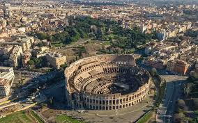
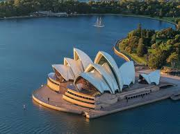

바르셀로나 파밀리아 대성당
세계에서 가장 유명한 미완성 성당으로 안토니 가우디의 건축 예술이 담긴 걸작.
복잡한 장식과 독특한 구조가 마치 성 위의 성을 보는 듯한 경험을 선사한다.

로마 콜로세움
2000년 전 로마 제국이 지은 거대한 원형경기장으로 고대 건축 기술의 위대함을 보여준다.
역사 속으로 떠나는 여행을 경험할 수 있는 필수 방문지.

시드니 오페라 하우스
조개 모양의 독특한 형태로 유명한 현대 건축의 걸작.
하버 브릿지와 함께 시드니의 상징이며 세계 문화유산으로 등재된 명소.